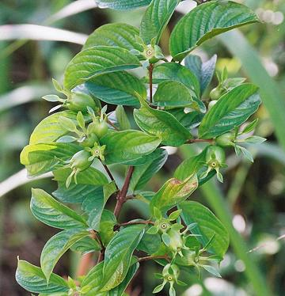
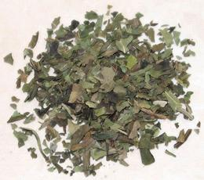

Beletientien / Atama

[Bush Apple; Beletientien, Atama (Nigeria); Obeletientien, Beletete;
Heinsia crinita]
Native to Tropical Africa - Guinea east to Somalia and south to Angola,
Zimbabwe and Mozambique, this plant can be a scrambling shrub in the jungles,
or a small tree (up to 42 feet (13 meters)) in the forest understory. The
yellow to red fruits are about 0.71 inches long and 0.55 inches diameter
(18 x 14 mm). They are considered to have a pleasant flavor and are eaten
locally, picked in the wild.
The plant is cultivated in the Delta region of Nigeria for its leaves.
They are essential to the famous
Banga Soup (Palm Fruit Soup), and are used both fresh and dried.
Photo by Scamperdale distributed under license
Creative Commons
Attribution-NonCommercial 2.0 Generic.
More on Madders

Buying:
These leaves are of limited availability in North
America, but I have purchased the photo specimens to the left on-line for
2022 US $13.89 for 1.5 ounces (43 grams).
Substitute:
Recipes have proposed various substitutes:
Tarragon, Scent Leaf (African Basil), finely shredded Bitter Leaf, and
dried Mint Leaves. In my experiments I've found 2 parts dried Oregano to
1 part dried Mint gets pretty close.
gn_beletz 220207 - www.clovegarden.com
©Andrew Grygus - agryg@clovegarden.com - Photos
on this page not otherwise credited © cg1
- Linking to and non-commercial use of this page permitted